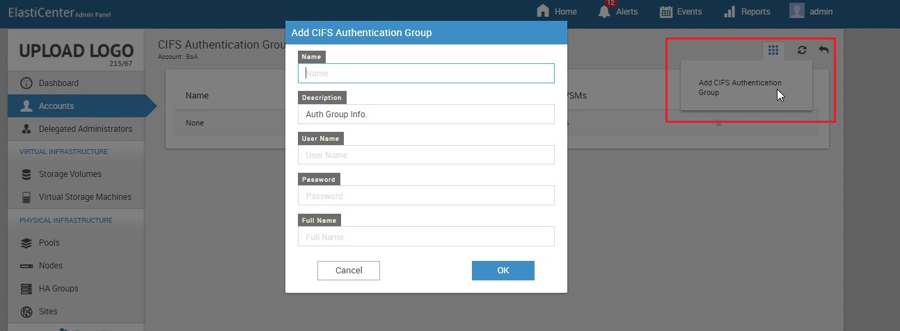

Data access using CIFS
The Common Internet File System (CIFS), is a network protocol whose most common use is sharing files on a Local Area Network(LAN).
The following workflow explains how to configure CIFS options:
Configure VSM CIFS options at the VSM level. File system CIFS options can be configured at the Storage Volume level (if you have enabled the protocol option).
VSM CIFS options
By default, CloudByte ElastiStor creates a default VSM CIFS options group with industry standard options.
After you create the VSM, Manage CIFS Configuration option can be used to manage CIFS options at VSM level. You can either select the default one or select options from the drop down menu.
| Field | Description |
| Authentication Model | By default the Authentication Model is user. |
| NetBios Name | A unique name for the VSM CIFS options template. |
| Server Description | A meaningful description of the VSM CIFS options template. |
| Workgroup | The workgroup that the server will appear to be in. |
| DOS Charset | The character set that is used while communicating with the Windows clients. The default is CP437 |
| UNIX Charset | The character set that is internally used. The default is UTF-8. |
| Log Level | Sets the amount of log/debug messages that are sent to the log file. Default is Minimum. Keep it this way for best performance unless more information is needed for troubleshooting. |
| Time Server | Determines whether or not ElastiStor advertises itself as a time server to Windows clients. |
File system CIFS options
By default, CloudByte ElastiStor creates a default file system CIFS options group with industry standard options. After you create the Storage Volume, Manage CIFS Configuration option can be used to manage CIFS options at Storage Volume level.
| Option | Description |
| Status | If Enabled, CIFS Share can be accessed. If NFS is enabled on a Storage Volume, you can access CIFS share by setting Status to enable. |
| Name | A unique name for the file system CIFS options template. |
| Description | A meaningful description of the CIFS options template. |
| Read Only | If checked, prohibits write access to the share. |
|
Browseable |
If selected, clients when they browse the shared directory using Windows Explorer can see the list of shares. If unselected, client has to explicitly specify the full server path in Windows Explorer. |
| Inherit Permissions | If selected, permissions on new files and directories are inherited from parent directory.This option is (particularly) helpful in scenarios where there are large systems with many users involved. Inheriting permissions let a single home share to be used flexibly by each user. Leave this unselected if Type of ACL is set to Windows in the Volume's permissions. |
| Recycle Bin | If selected, instead of purging the files, they are moved to recycle bin of CIFS share on deletion. |
| Hide Dot Files | Dot files (unlike on UNIX) appear on Windows. Select the option to hide the Dot files. |
| Hosts Allow | Host-based protection feature. Comma-separated or space separated list of IP addresses that are allowed to access the shares. If nothing is specified, the default value ALL applies. |
| Hosts Deny | Host-based protection feature. Comma-separated or space separated list of IP addresses that are denied access to the file system. If you specify ALL, IP Addresses that are not listed in the Host Allow field are denied permission. |
CIFS authentication workflow
A CIFS Authentication Group is a grouping of multiple CIFS users. You can select the users who can access the CIFS share.
- In the ElastiCenter, select Accounts (Navigation pane > Accounts).
- In the Accounts page, select the account for which you want to specify the protocol options.
- Select Manage CIFS Authentication Groups in the Actions Icon.
- Click Add Authentication Group in the following page:
- Specify the required details and then click OK.
- In the VSM page, select the VSM for which you want to assign the authentication group.
- Select Manage CIFS Configuration (Actions Icon > Tasks).
- Click Edit, select a Discovery Authentication Group from the drop-down list and then click Save.
- In the confirmation prompt, click Modify.

| Field | Description |
| Name | A unique name for the authentication group. |
| Description | A meaningful description for the authentication group. |
| User name | Specify a name for the user. |
| Password | Specify a password for the user. |
| Full name | Specify the full name of the user. |